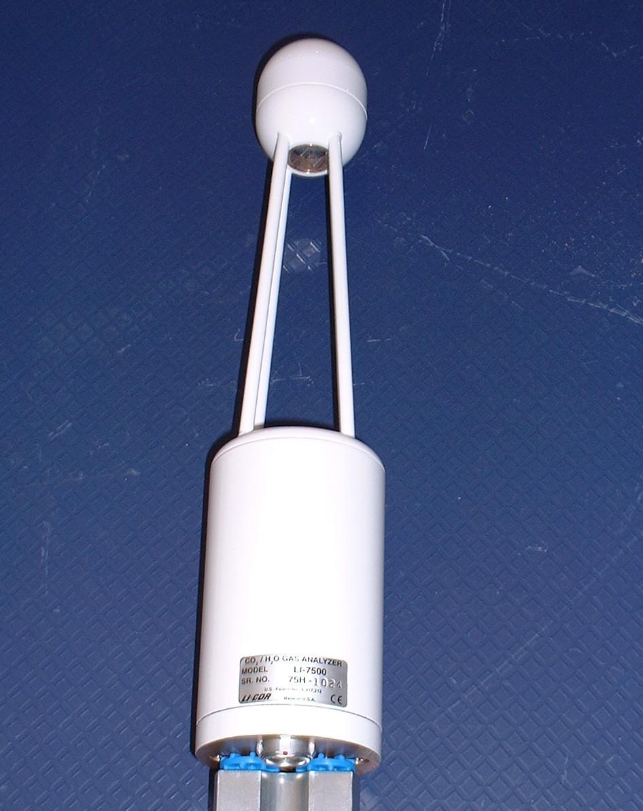

|  |
| LI-7500 Sensor head |
For each gas, the power recieved from the infrared source is measured at two wavelengths - one at a wavelength that is absorbed by the gas, and the other at a non-absorbing reference wavelength. The absorbance is then approximated by:-
ai = 1 - Ai/Aiowhere Ai is the power received at the absorbing wavelength and Aio is the power received at the reference wavelength. This measurement is carried out by the LI-7500 at a rate of 152Hz. A value of a is thus obtained for both H2O and CO2 (after making a correction for the cross-sensitivity between the two gases), and this is used by the LI-7500 to produce a calibrated output of the number densities (in mmol/m3) of the gases (or, alternatively mass density, which is obtained by simply multipying the molar concentration by the molecular weight of each of the gases.)
There is a small pressure dependency in the conversion of the absorbances of the gases to number density (and for CO2, also a temperature dependency), which the LI-COR accounts for using sensors built into the electronics enclosure. The accuracy of these measurements does not have to be very high.
In order to convert the output of the LI-7500 into more useful quantities, however, (such as converting H2O number density into a specific humidity [g/kg], or CO2 number density into molar fraction [ppm]), accurate pressure and temperature measurements of the air are required. Post-processing of the LI-COR data uses pressure and temperature sensors located on the 10m mast to perform these calculations.
Further information on this instrument can be obtained from the manufacturer's website: http://www.licor.com